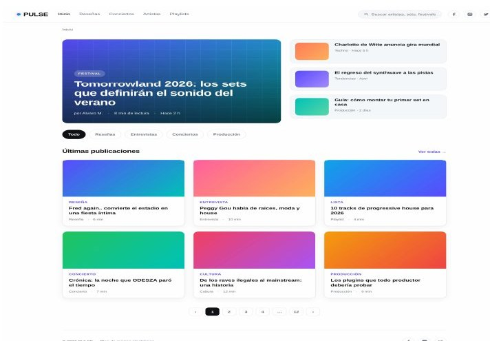
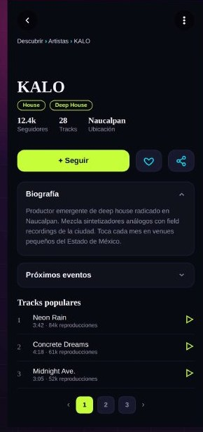
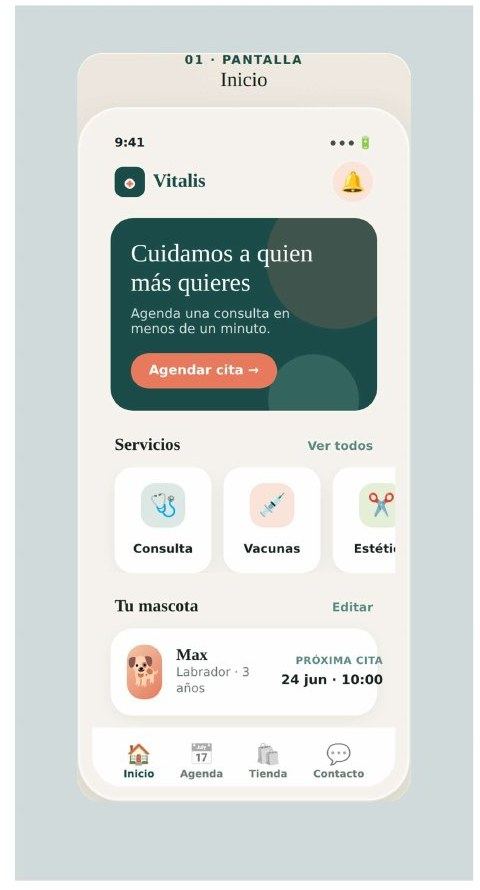
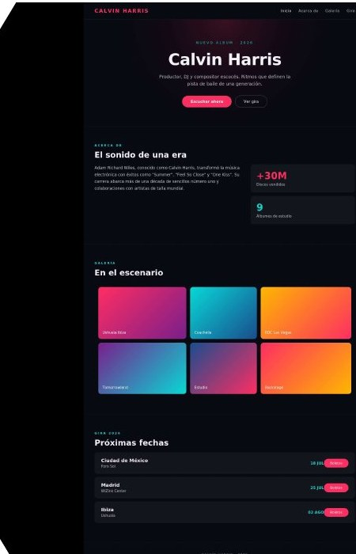

Blog responsivo · Web
PULSE
Blog de música electrónica con 6 pantallas diseñadas para escritorio (1440px) y móvil (390px). Evaluado con las 7 facetas UX de Peter Morville.
ResponsivoUX / MorvilleJerarquía visual
// analista programador · full-stack + diseño de interfaces
Soy Alvaro Alva Ascencion. Desarrollo software por capas con ASP.NET y SQL Server, y diseño interfaces centradas en el usuario. Aquí conviven mi trabajo técnico y mi trabajo de diseño.
Interfaces diseñadas de extremo a extremo: identidad de marca, estructura, jerarquía visual y justificación desde la experiencia de usuario.

Blog de música electrónica con 6 pantallas diseñadas para escritorio (1440px) y móvil (390px). Evaluado con las 7 facetas UX de Peter Morville.

App para descubrir artistas de música electrónica emergentes cerca de ti. Diseñada desde un problema real, con reproductor, mapa de eventos y perfiles.

App veterinaria con 4 pantallas. Identidad de marca completa (paleta, tipografías Fraunces + Inter) y principios de agrupación, contraste, jerarquía y escala.

Interfaz web de una sola página con estética EDM: inicio, biografía, galería y fechas de gira, con navegación por anclas y estética de alto contraste.
Lo que uso a diario en desarrollo profesional y en mis proyectos de diseño.
Trabajo como Analista Programador desarrollando sistemas empresariales full-stack: modernización de plataformas, módulos de administración y procesos de negocio sobre ASP.NET y SQL Server, siguiendo estándares de arquitectura por capas.
En paralelo estudio la Ingeniería en Desarrollo de Software en Universidad Tecmilenio, donde he profundizado en diseño de interfaces y experiencia de usuario. Esa combinación es lo que más me interesa: construir cosas que no solo funcionen bien por dentro, sino que se entiendan por fuera.
Me gusta el detalle, la coherencia y planear antes de ejecutar. Cada proyecto de este portafolio refleja esa forma de trabajar.